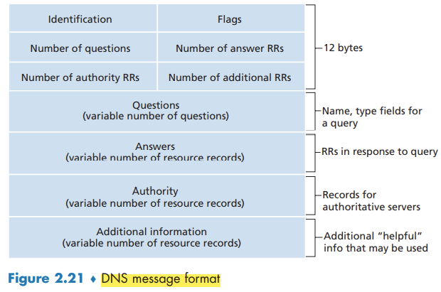

↩️ ttm4100
DNS - The Internet's Directory Service
One identifier for a host is its hostname.However, hostnames provide little, if any, information about the location within the Internet of the host. Furthermore, because hostnames can consist of variable-length alphanumeric characters, they would be difficult to process by routers. For these reasons, hosts are also identified by so-called IP addresses.
An IP address looks like 121.7.106.83, where each period separates one of the bytes expressed in decimal notation from 0 to 255. An IP address is hierarchical because as we scan the address from left to right, we obtain more and more specific information about where the host is located in the Internet (that is, within which network, in the network of networks).
Services Provided by DNS
We need a directory service that translates hostnames to IP addresses. This is the main task of the Internet’s domain name system (DNS).
The desired IP address is often cached in a “nearby” DNS server.
DNS provides a few other important services in addition to translating hostnames to IP addresses:
- Host aliasing
- Mail server aliasing
- Load distribution. For replicated Web servers, a set of IP addresses is associated with one alias hostname. When clients make a DNS query for a name mapped to a set of addresses, the server responds with the entire set of IP addresses, but rotates the ordering of the addresses within each reply.
Overview of How DNS Works
A centralized design
A simple design for DNS would have one DNS server that contains all the mappings.
The problems with a centralized design include:
- A single point of failure.
- Traffic volume.
- Distant centralized database.
- Maintenance.
A centralized database in a single DNS server simply doesn’t scale.
A Distributed, Hierarchical Database
DNS uses a large number of servers, organized in a hierarchical fashion and distributed around the world. No single DNS server has all of the mappings for all of the hosts in the Internet.
The client first contacts one of the root servers, which returns IP addresses for TLD servers for the top-level domain com. The client then contacts one of these TLD servers, which returns the IP address of an authoritative server for amazon.com. Finally, the client contacts one of the authoritative servers for amazon.com, which returns the IP address for the hostname www.amazon.com.
Each ISP has a local DNS server (also called a default name server). DNS caching reduces query traffic.
DNS Caching
In a query chain, when a DNS server receives a DNS reply (containing, for example, a mapping from a hostname to an IP address), it can cache the mapping in its local memory.
Because hosts and mappings between hostnames and IP addresses are by no means permanent, DNS servers discard cached information after a period of time (often set to two days).
DNS Records and Messages
A resource record is a four-tuple that contains the following fields: (Name, Value, Type, TTL)
TTL is the time to live of the resource record; it determines when a resource should be removed from a cache. The meaning of Name and Value depend on Type (A, NS, CNAME, MX).
DNS Messages
Both query and reply messages have the same format.

Inserting Records into the DNS Database
A registrar is a commercial entity that verifies the uniqueness of the domain name, enters the domain name into the DNS database (as discussed below), and collects a small fee from you for its services.